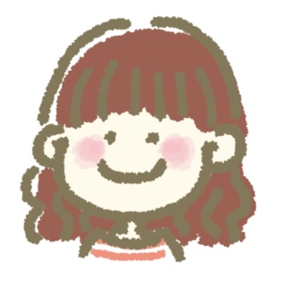

KARIYA MIO

- 仮屋 未央（かりや みお）
- ・1995年9月6日生まれ
- ・チーズと桃が大好物
- ・趣味は音楽鑑賞、ライブ、読書
- ・好きな作家は伊坂幸太郎、青山美智子、瀬尾まいこ
- ・カメラ（Cannon EOS KissM）で風景を撮ることが好き
- ◆IllustratorやPhotoshop、ibispaintを用いて素材制作、デザインをすることが得意です。ほっこりしたテイストのものが多いですが、ご希望に合わせてシンプルさやスタイリッシュさ等を表現することも可能です。
◆前職で培ったコミュニケーションスキルでお客様の思いに寄り添い、様々な視点からデザインの提案をします。
◆ユーザビリティやアクセシビリティなどを意識しながらも、どこか心惹かれるデザインを制作したいです。